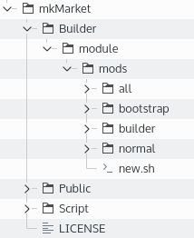
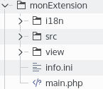
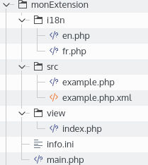

Comment créer une extension de builder
Introduction
Le mkframework utilise un générateur web, que vous connaissez surement pour créer une application mais aussi pour générer du code vous facilitant vos developpements.De la simple couche modèle, au module CRUD en passant la la gestion d'authentification/droits... le générateur peut vous faire gagner beaucoup de temps.
Ces modules de générations s'appellent des extensions, et vous pouvez depuis peu en écrire vous même pour les proposer à la communauté du framework pour en fait bénéficier le plus grand nombre.
Présentation du SDK
Comme pour tout développement au sein d'un projet existants, il faut respecter certaines règles pour incorporer du code tiers, le builder du mkframework n'échappe pas à cette règle et vous propose des outis pour créer votre première extensionPour être le plus transparent, le market et un projet github à part entière, ceci permet une transparence:
- des mises à jour des extension
- des nouvelles extension ajoutées/proposées par des tiers
Installation des outils (SDK)
On utilise ici github pour stoquer à la fois le market et les outilsIl vous faut donc l'outil git ou simplement télécharge le zip (comme le permet github)
Nous verrons ici le premier cas, qui permettra par la suite de proposer votre extension au market.
Créer un répertoire mkMarket sur votre ordinateur, puis cloner le dépot git:
git clone https://github.com/imikado/mkmarket .
L'installation est terminée.
Présentation du SDK
Une fois le clonage effectuée (ou l'achive zip décompressée), vous avez l'arborescence suivante:
Nous allons dans ce tutoriel nous interesser uniquement à la première grappe de répertoires , laissez de coté Public et Script ;)
Nous avons donc un répertoire Builder qui contient une sous arborescence module/mods qui nous interesse.
Dans celle-ci nous voyons 4 répertoires (all,bootstrap,builder et normal) ansi qu'un script new.sh
Les 4 repertoires regroupent des extensions de type différents:
Il faut en fait différencier en 3:
normal: les extensions pour les sites "normaux", "application vide" dans le builder
bootstrap: les extensions compatibles avec les sites "bootstrap"
all: des extensions pour les deux types de site précédement cités
builder: des extensions pour gerer les extensions (réservé au créateur du framework) ;)
Enfin vous avez le script new.sh qui facilite la création d'une extension en copiant le template all/example
Créons la base de notre première extension
La première question à vous poser est: mon module de génération cible-t-elle un type d'application: normal/bootstrapPlus exactement, est-ce votre extension va générer des parties html qui dépendrait du type d'application (css différents entre normal/bootstrap)
Mon extension ne génère pas de code html
Sous GNU/Linux / Mac
cd Builder/module/mods
./new.sh all/monExtension
Sous Windows
cd Builder/module/mods
cp -r all/example all/monExtension
Mon extension génère du code html compatible bootstrap
Sous GNU/Linux / Mac
cd Builder/module/mods
./new.sh bootstrap/monExtension
Sous Windows
cd Builder/module/mods
cp -r all/example bootstrap/monExtension
Mon extension génère du code html pour un site "normal"
Sous GNU/Linux / Mac
cd Builder/module/mods
./new.sh normal/monExtension
Sous Windows
cd Builder/module/mods
cp -r all/example normal/monExtension
Notre première extension
Une fois cette copie faite vous avez un template d'extension qu'il va vous falloir paramétrer et développerVoici l'aborescence de votre extension:

dépliée:

i18n/ pour permettre un builder multi-lingue, il nous faut donc des extensions multilingue, nous verrons plus tard comme utiliser cette API
src/ ce répertoire contiendra vos fichiers sources permettant la génération de code à partir de template.
view/ contiendra les vues de votre extension, formulaire..
main.php: le controller de votre extension
info.ini la fiche de votre extension (nom, version, categorie..)
Commençons la personnalisation
Fichier main.php
Vous avez dans ce fichier le code suivant
<?php
class module_mods_all_example extends abstract_moduleBuilder{
protected $sModule='mods_all_example';
protected $sModuleView='mods/all/example';
1. le nom de la classe en rapport avec l'arborescence de votre extension
2. idem pour la variable $sModule
3. enfin la variable $sModuleView
Pour exemple ici si votre extension est
normal/monExtension ça donnera:
<?php
class module_mods_normal_monExtension extends abstract_moduleBuilder{
protected $sModule='mods_normal_monExtension';
protected $sModuleView='mods/normal/monExtension';
boostrap/monExtension ça donnera:
<?php
class module_mods_boostrap_monExtension extends abstract_moduleBuilder{
protected $sModule='mods_boostrap_monExtension';
protected $sModuleView='mods/boostrap/monExtension';
ou
all/monExtension ça donnera:
<?php
class module_mods_all_monExtension extends abstract_moduleBuilder{
protected $sModule='mods_all_monExtension';
protected $sModuleView='mods/all/monExtension';
Fichier info.ini
Vous avez au départ ce fichier
title.fr='mon module'
title.en='my module'
category='maCategory'
version=1.0.0
author=mkframework
title.fr/en : permet d'indiquer le nom de l'extension dans le builder
category : la category de l'extension:
- coucheModel
- modules
- modulesEmbedded
- views
- databasesEmbedded
version : la version de l'extension
author: votre pseudo, ou votre compte twitter
Votre extension est créé, suivez le lien suivant pour apprendre comment.
Comment développer votre extension